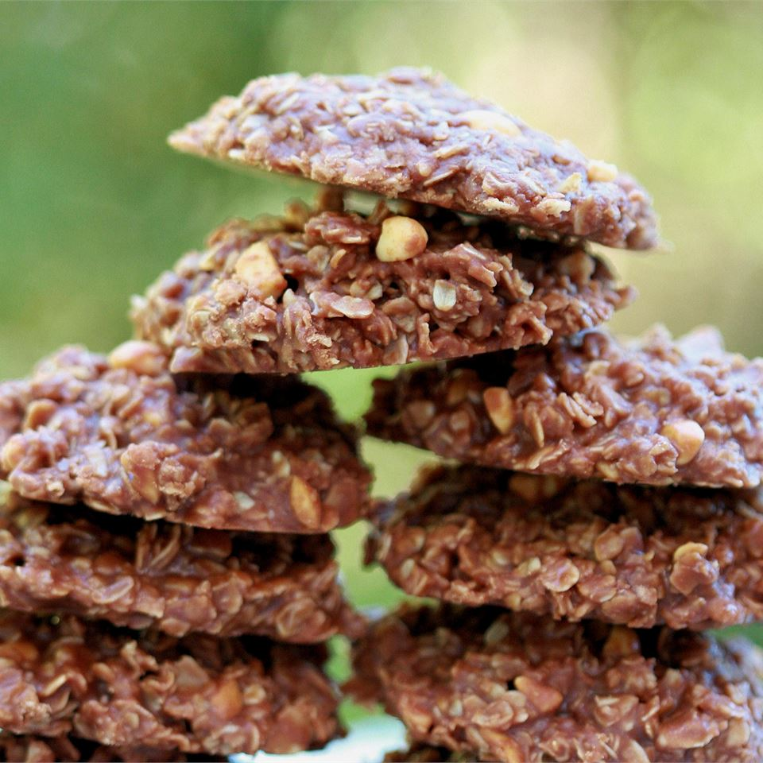

No Bake Cookies

Ingredients
- 1 and 3/4 cups white sugar
- 1/2 cup milk
- 1/2 cup butter
- 4 tablespoons unsweetened cocoa powder
- 1/2 cup crunchy peanut butter
- 3 cups quick-cooking oats
- 1 teaspoon vanilla extract
Steps
- In a medium saucepan, combine sugar, milk, butter, and cocoa. Bring to a boil, and cook for 1 1/2 minutes. Remove from heat, and stir in peanut butter, oats, and vanilla. Drop by teaspoonfuls onto wax paper. Let cool until hardened.
Back